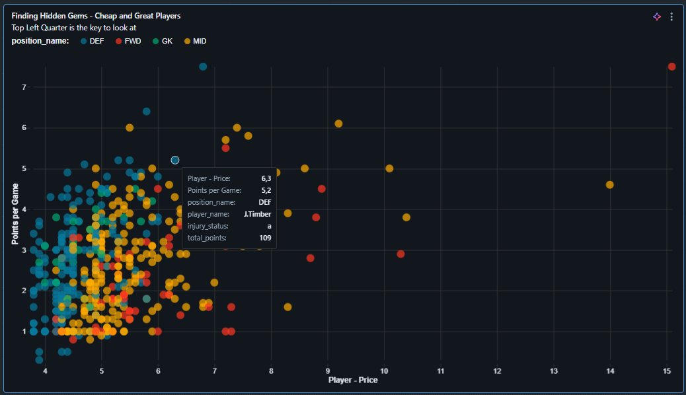

The Goal: Stop guessing and start calculating. Fantasy Premier League (FPL) is played by millions, but most rely on intuition. I wanted to build a scientifically accurate "Moneyball" engine that selects the mathematically optimal squad based on current form, ROI, and constraints—building a full end-to-end data pipeline in the process.
This project wasn't easy. I started with a simple idea: download CSV files from GitHub. It worked, but it felt "static" and relied on someone else's data. I wanted Real Data Engineering experience.
So, I decided to switch to the Official Premier League API. This was a big challenge because the data was in complex, nested JSON format, not clean tables. Also, I faced a technical roadblock: Databricks Community Edition does not allow internet access for Python scripts.
I had to find a workaround. I designed a Hybrid ELT Architecture to bridge my local machine (with internet) and the cloud database.
I wrote a Python script to fetch the raw JSON from the API on my laptop, bypassing the cloud firewall restrictions.
The raw data is uploaded to Databricks as the bronze_json_raw table. This is our immutable raw storage.
Databricks SQL engine parses the nested JSON structure, cleans data types, and creates the Silver & Gold layers.
Finally, Python (PuLP) solves the math problem and feeds the results into a Dashboard.
The switch to the official API meant dealing with "messy" data. The API returns one giant JSON object with nested arrays. I used advanced SQL functions like EXPLODE to flatten the arrays and CAST to handle data types. This effectively implements the Medallion Architecture (Bronze -> Gold).
This is where Data Science meets Operations Research. I used the Simplex method (via the Python PuLP library) to solve a constraint satisfaction problem.
The model doesn't just pick "good players". It maximizes the total player_form of the team while following strict rules:
I also implemented a "performance floor" constraint. To ensure the team is competitive, the total form of the selected 11 players must be strictly higher than the league average multiplied by 11.
The output isn't just a list of names. I used my Power BI & Dashboarding skills to build a native Databricks interface. The key visualization is the "Moneyball Scatter Plot".
It plots Price (X) vs. Form (Y). The algorithm targets players in the Top-Left Quadrant (Low Price, High Performance)—the hidden gems that allow us to afford expensive superstars like Haaland while keeping a balanced team.
This project was a crash course in modern cloud engineering. I learned that Data Engineering isn't just about code—it's about architecture and workarounds. When the initial plan (GitHub CSVs) wasn't enough, I pivoted to a harder solution (API + JSON) and solved the cloud connectivity issues. Combining this with Operations Research and Visualization resulted in a tool that actually beats human intuition.